FALL PREVENTION TRAINING
高齢者転倒予防トレーニング
65歳以上の方が対象。江別市介護保険課で認定を受けると、費用負担なしで機能訓練を受けられます。
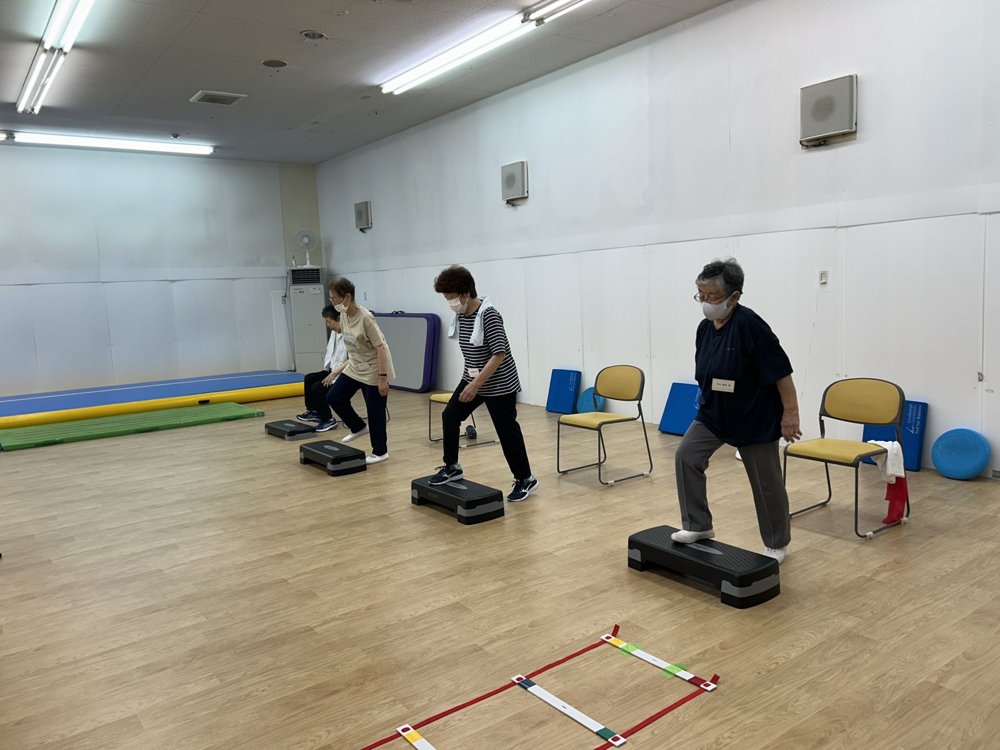
高齢者転倒予防トレーニングとは…
当院では、江別市から委託を受け、江別市の各地域包括支援センターと連携し「高齢者転倒予防筋力向上トレーニング」（転倒予防機能訓練）を実施しています。 65歳以上の方が対象で、江別市介護保険課で認定を受けると費用負担なしで、機能訓練を受けることが出来ます。 ご希望の方はもよりの地域包括支援センターへご相談ください。
特性に合わせた個別プログラム── 高齢者の身体機能を高めます。
「筋力向上トレーニング」を行うことにより、高齢者の筋力、バランス、柔軟性、移動能力などの身体機能が高まります。今まで出来なかった動作がらくに行えるようになり、高齢者の方々が、より元気で活動的な生活を送ることが出来るようにお手伝いさせていただきます。利用者の特性に合わせて3ヶ月間の個別プログラムを作成します。（体力測定等により初期評価を行った上で、利用者の筋力高め、柔軟性やバランス能力を向上させるための包括的なトレーニングプログラムを作成します。）
機能訓練指導員として基礎・専門的講習を履修した機能訓練指導員認定柔道整復師（公益社団法人日本柔道整復師会認定）が責任を持って担当します。
整骨業務で培われた経験により利用者に関する疾病や疼痛などの予見やリスク管理に対し適切に対応しますので、腰痛や膝関節痛等をお持ちの方でも安心してご利用いただけます。
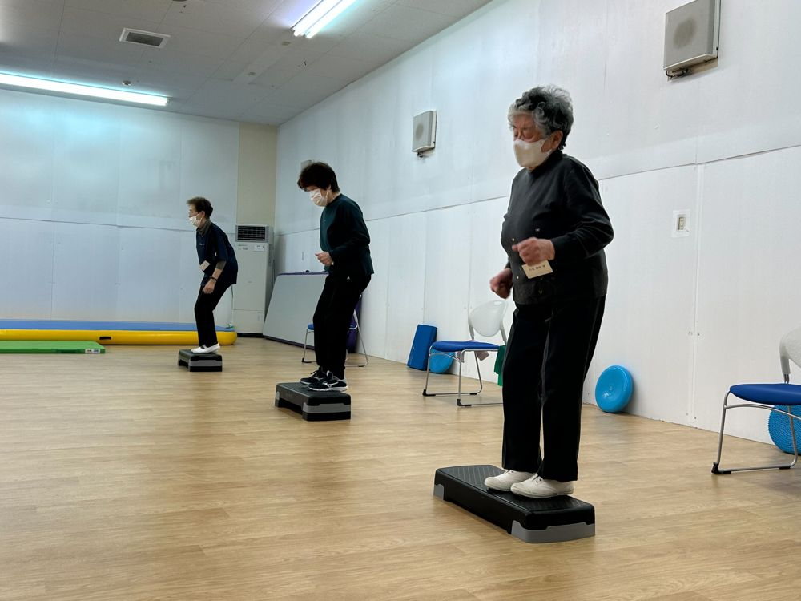
活動場所
| 施設名 | 住所 | お問い合わせ |
|---|---|---|
| 江別第一地域包括支援センター | 〒067-0004 北海道江別市若草町6-1 江別市保護センター | 011-389-4144 |
| 江別第二地域包括支援センター | 〒067-0004 北海道江別市若草町6-1 江別市保護センター | 011-389-5420 |
| 野幌第一地域包括支援センター | 〒069-0801 北海道江別市中央町31番地の6 | 011-381-2940 |
| 大麻第一地域包括支援センター | 〒069-0854 北海道江別市大麻中町2-17 | 011-388-5100 |
活動風景
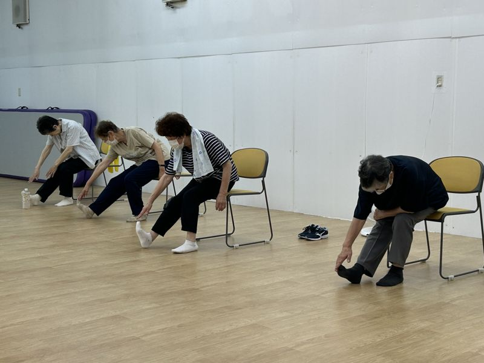
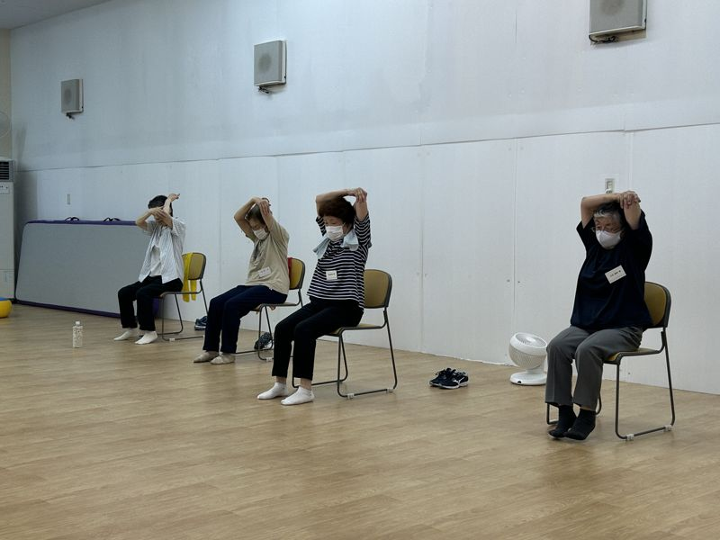
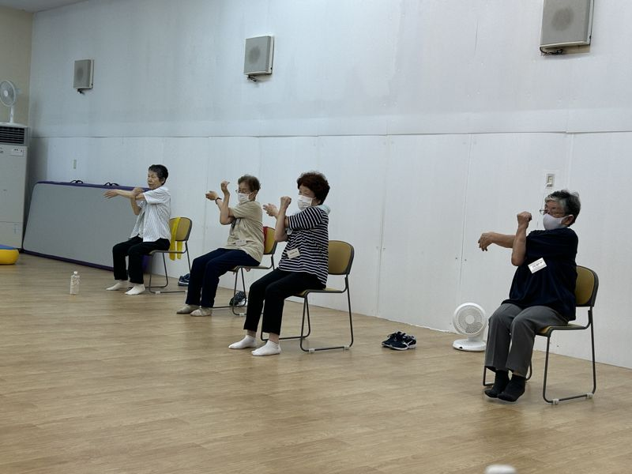
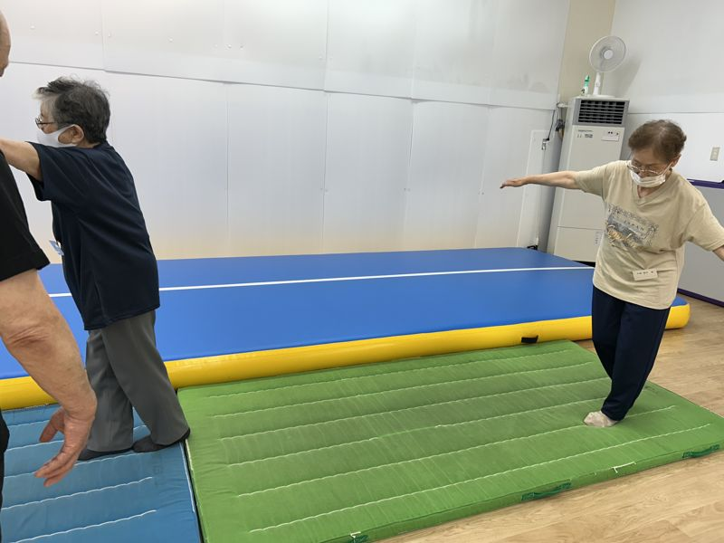
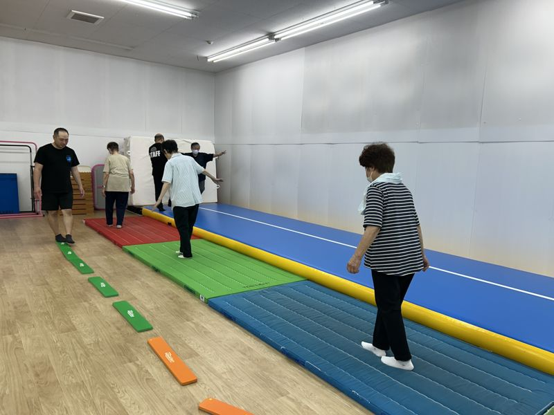
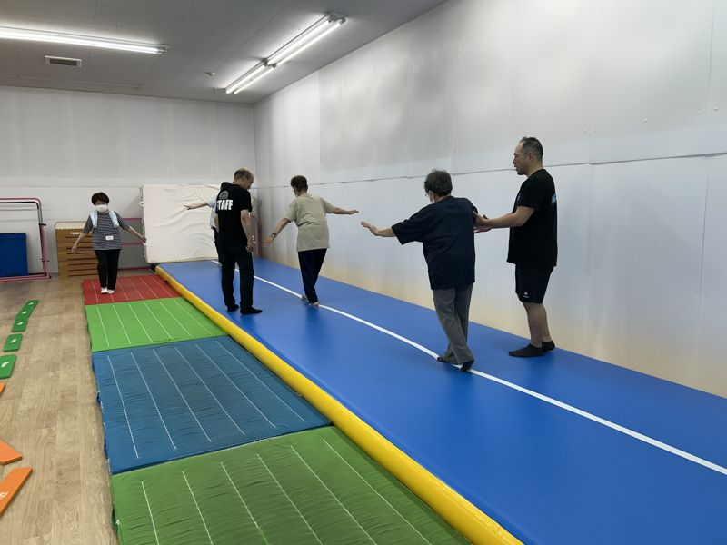
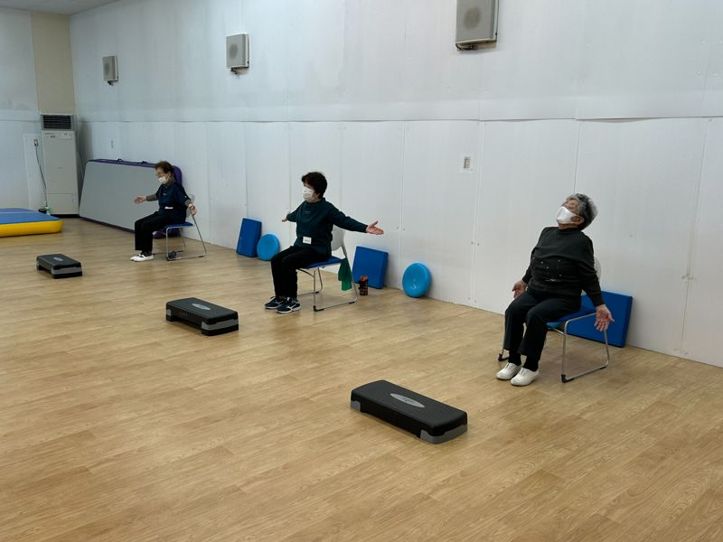
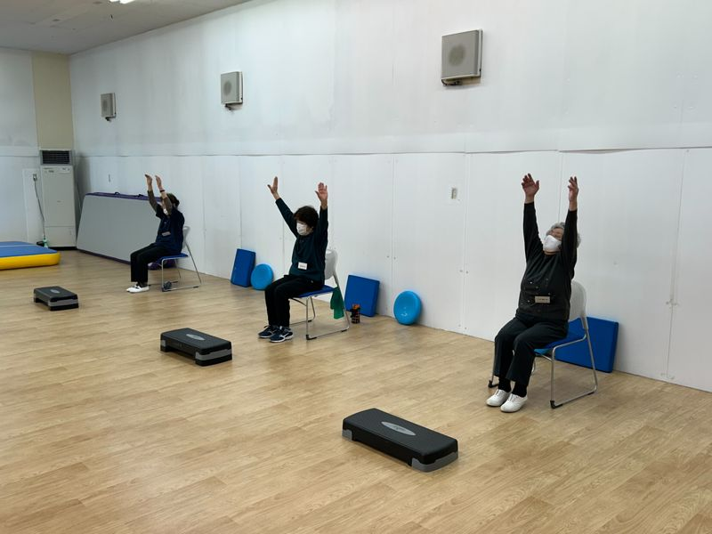
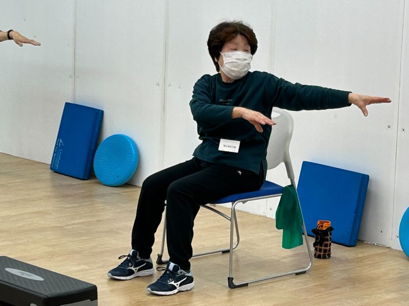
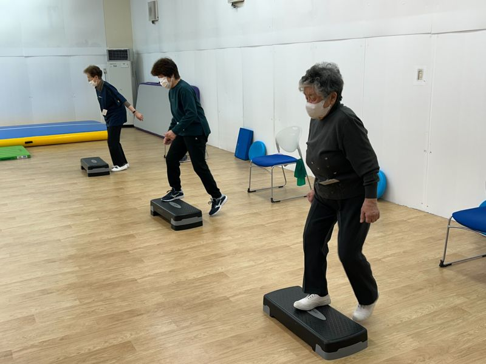
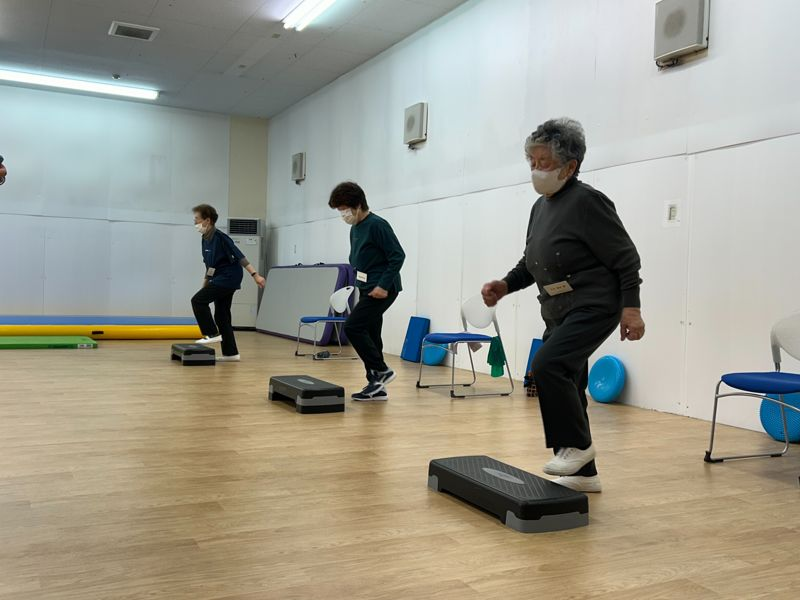
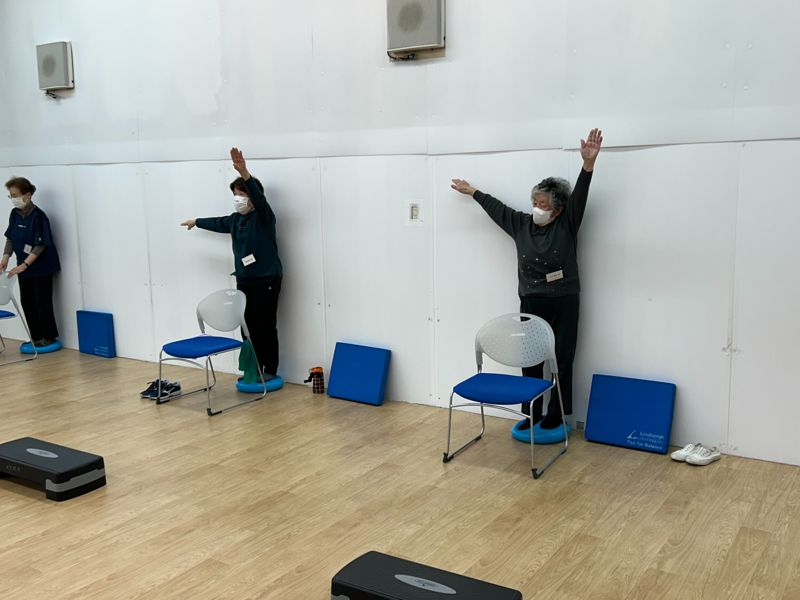
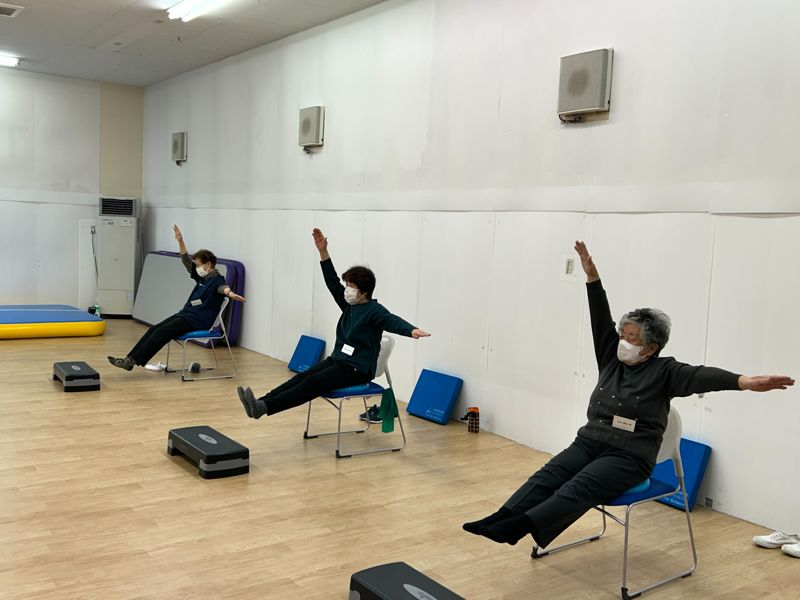
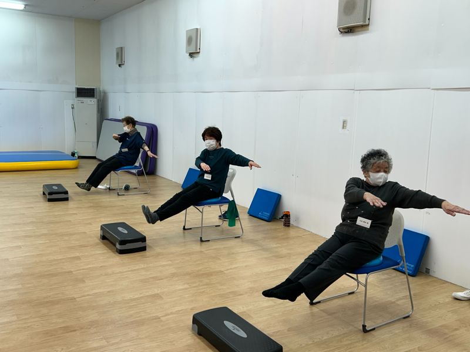
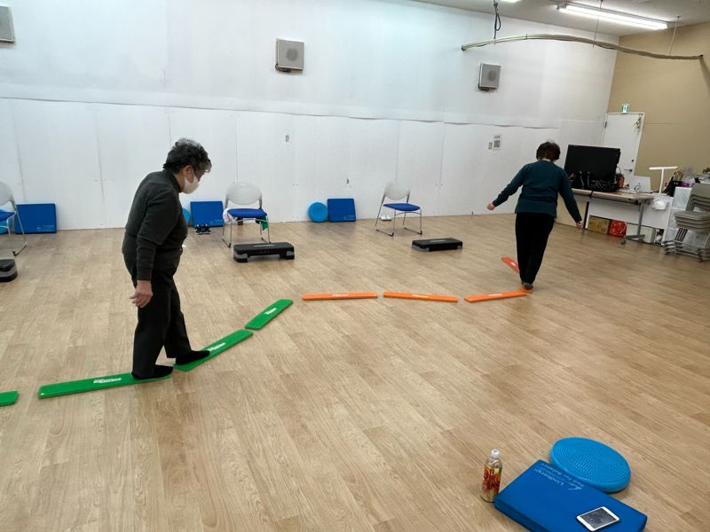
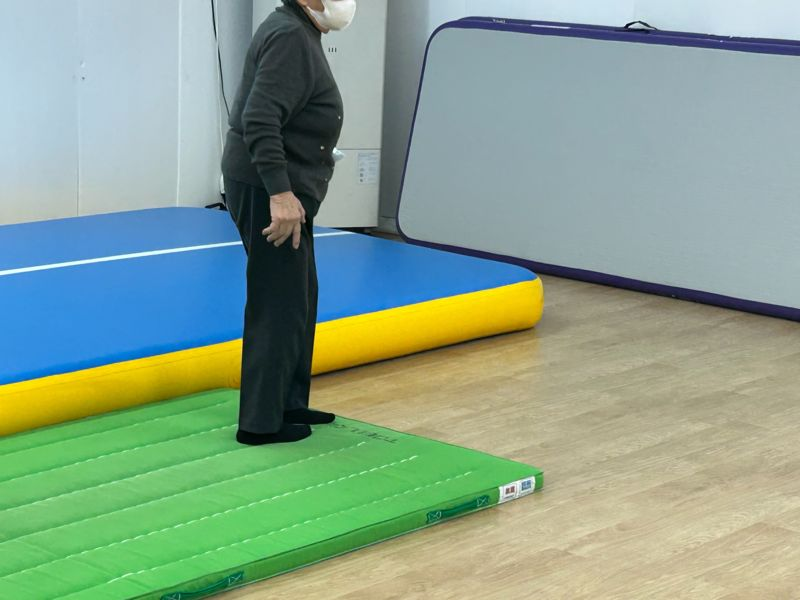
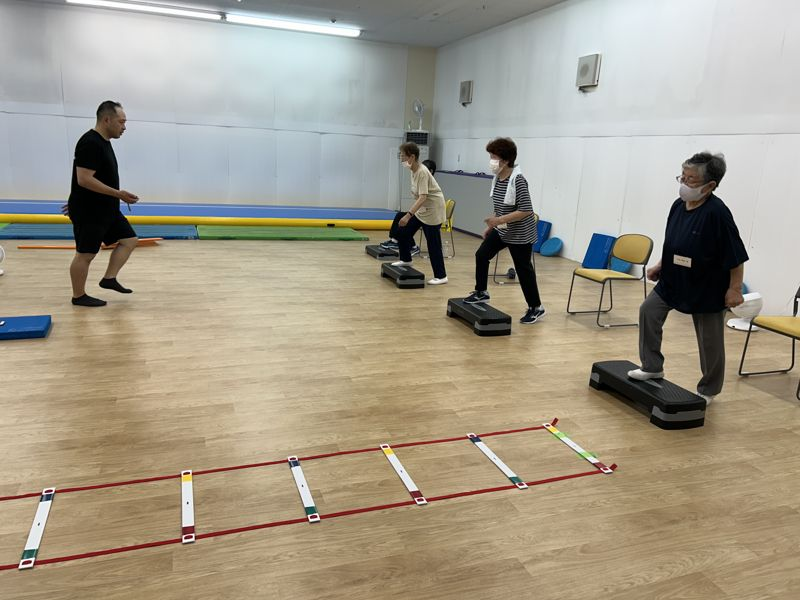
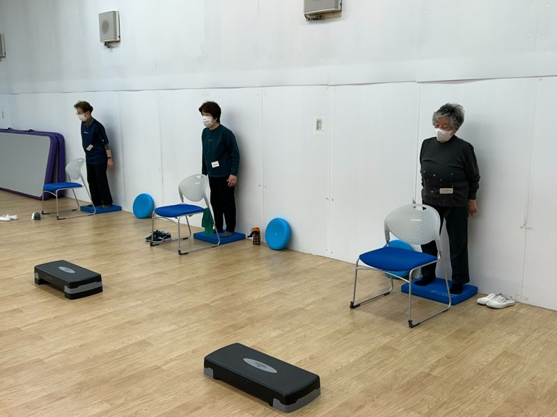